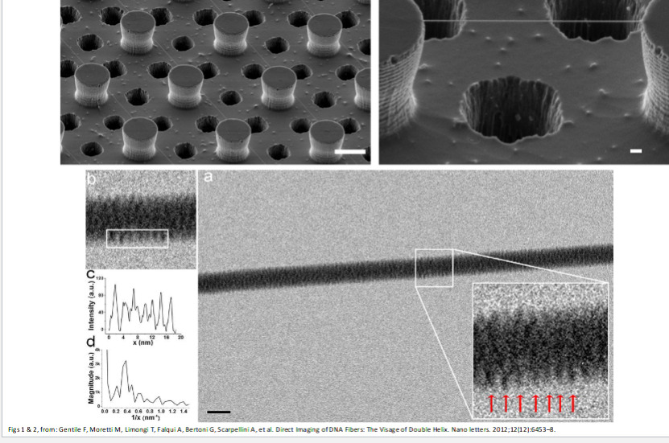

Table of Contents
TEP 327: Engineering and Law
Why do engineers need to know about law?
- Engineering ends up stepping across a lot of jurisdictions, so we kinda need to know about it.
Law is …
- very territorial: must note jurisdiction
- Must develop intuition for jurisdiction (See section 91)
- Generally:
- Things outside of Canada & maintained across Canada – Federal
- Things that are managed within Canada and aren’t necessarily consistent (local effect) – Provincial
- Things that Provincial gov. doesn’t want to deal with – Municipal (via mandate)
- And for everything – consider case law, etc.
- always dependent on context and subject to interpretation; the law’s wording can stay constant but the interpretation can change over time
- There are standard methods of interpretation (Living tree vs originalist, strict literal vs commercial reality/intentions)
- Canada is bijural (both civil and common law)
- Note difference between public (refers to society as a whole) and private law (individual interactions)
Resources
ECE286: Probability and Statistics
Probability
Coin flip example & combining probabilities
Outcomes denoted by variables, i.e. for coin clip \( H \), \( T \). Probability of outcome is denoted by \( P(X) \), where \( X \) is the outcome. We must have \( \sum(P) = 1 \) since \( 100% \).
Suppose \( P(H) = 0.3 \) , \( P(T) = 0.7 \).
Then, $$P(HT) = P(H)P(T) = 0.3 \times 0.7 = 0.21 $$ $$ P(HT) = P(H)P(T) = 0.3 \times 0.7 = 0.21 $$ $$ P(HT \text{ or } TH) = P(H)P(T) + P(T)P(H) = \\ 0.3 \times 0.7 + 0.7 \times 0.3 = 0.42 $$
Sets and events
Sample space: set of a\ell possible outcomes. E.x.
- coin flip: \( S = {H, T} \)
- roll of a die: \( S = {1,2,3,4,5,6} \)
- roll of a die but only care even/odd: \( S = {even, odd} \)
Event: a subset of sample space
For example, each element, \(e \in S = {1,2,3,4,5,6} \) are the elements of S for a die.
Complement of an event A w.r.t. S: everything in \( S \) and not \( A \), denoted \( A' \).
Example: for a die, \( {1, 2} \) is the complement of \( {3,4,5,6} \)
Intersection of two events: everything in \( A \) and \( B \), denoted \( A \cap B \)
Union of two events: everything in \( A \) or \( B \), denoted \( A \cup B \)
Counting
Multiplication Rule: The total amount of outcomes is the product of the amount of outcomes in each event. I.e. if for a sequence if \( k \) events \( E_1, E_2, …, E_k \) with outcomes \( S_1, S_2, …, S_k \) then the total amount of outcomes is \( \prod_{i=1}^k S_i \)
Permutations: \( n \) distinct objects can be arranged in \( n! \) ways. When considering permuting a subset of size \( r \) taken from a set of size \( n \), the total number of arrangements is given by
$$ nPr = \frac{n!}{(n-r)!} $$
If we can have repeated kinds, i.e. if there are \( m \) kinds of items and \( n_k, k = 1, \dots m \) of each kind, then there are
$$ \frac{n!}{n_1!n_2!\dots n_m!}$$ permutations.
For example, we can order “ATLANTIC” \( \frac{8!}{2!2!1!1!1!1!} = 10080\) times.
The same formula applies for finding the number of ways to arrange \( n \) items into \( k \) subsets of size \( n_1, n_2, \dots , n_k \)
Combinations: Permutations, but order doesn’t matter.
$$ nCr = \binom{n}{r} = \frac{n!}{r!(n-r)!} $$
Note similarity to the partition formula; combinations can be thought as the set of partitions of size \( 1 \).
Additive Rules
For events A, B: $$ P(A\cup B) = P(A) + P(B) - P(A\cap B)$$
For \( n \) mutually exclusive events \( A_1, A_2 … A_n \) $$ P(A_1 \cup A_2 \cup … A_n) = P(A_1) + P(A_2) + … + P(A_n)$$
And if \( A_1, A_2 … A_n \) is a partition of sample space S,
$$ P(A_1 \cup A_2 \cup … A_n) = P(A_1) + P(A_2) + … + P(A_n)$$
And: $$ P(A \cup B) + P(A) + P(B) $$
ECE259: Electromagnetism
Electromagnetic field is a vector quantity given by a magnitude \( E \) and unit vector \( \hat{a} \), and is commonly found as the force exerted on a positive test charge \( q \).
$$ \vec{E}= E\hat{a}_E = \frac{\hat{F}}{q} = q\vec{E}$$
We can expand on this to find the force exerted by a point charge at varying distances \( r \) from the charge, noting that \( k = \frac{1}{4\pi E_o}\), where \( E_o \) is the permittivity of free space.
$$ \vec{E} = \frac{1}{k} \frac{q_{source}}{r^2} \hat{a}_e $$
and this can be further generalized for a system of charges that are not necessarily at the origin
$$ \vec{E_{sys}} = \frac{1}{k}\sum_k \frac{q_k}{|\vec{R}-\vec{R'_k}|^3}(\vec{R} - \vec{R'_k}) $$
Vector Calculus Review
Converting between coordinate systems:
Cylindrical \(( r_p, \phi_p, z_p)\):
Note: When adding vectors in non-Cartesian coordinate systems we cannot just add the components because the direction of the unit vectors can change.
When adding vectors in non-Cartesian coordinate systems we must first convert the vectors to Cartesian coordinates
Cylindrical -> Cartesian: $$ r_p = \sqrt{x_p^2 + y_p^2} $$ $$ \phi_p = \arctan(y_p/x_p) $$ $$ z_p = z_p $$
Cartesian -> Cylindrical: $$ x_p = r_p \cos(\phi_p) $$ $$ y_p = r_p \sin(\phi_p) $$ $$ z_p = z_p $$
BME205: Introduction to Biomedical Engineering
Cells
Componennts
-
Lysosome:
-
Mitochondria:
-
Smooth Endoplasmic Reticulum:
-
Nucleus:
- Chromatin:
- Nucleolus:
- Nuclear pores:
- Cisternae:
-
Ribosome:
-
Endoplasmic Reticulum:
-
Golgi Apparatus:
-
Vesicle:
-
Rough Endoplasmic Reticulum:
-
Plasma Membrane:
-
Vacuole:
DNA & Chromosomes
DNA is built up of nucleotides, each of which has three components: a nitrogenous base, a five-carbon sugar deoxyribose, and a phosphate group. These are linked together by hydrogen bonds between bases, which is highly specific: adenine (A): thymine (T): guanine (G): cytosine (C).

The above is direct imaging of DNA fibers; see how they can fit together!
Chromosomes are made of DNA that has been “super coiled” (think: telephone cord).
 .
.
There are multiple ways that this can be packed, e.g. zigzag or solenoid patterns:


One can imagine that in a complicated system like this there can be knots and kinks and errors – which is what can happen and lead to various complications e.g. cancer.
PHY294: Quantum and Thermal Physics
Useful tools:
Planck’s Equation: photon energies \( E = hv = \frac{hc}{\lambda} \)
de Broglie wavelength: relating momentum with wavelength \( \lambda = \frac{h}{m v}\)
Schrodinger’s equation:
$$ H\psi = E\psi $$
- \( H \) is the Hamiltonian, \( \psi \) is the wave function, and \( E \) is the energy.
- \( |\psi|^2 \) gives the probability density function.
Recall: for a 1D particle in a box we use \( \psi = Asin(kx) + Bcos(kx)\) and then we can apply the boundary conditions at the bounds of the box. We may then find \( \psi \)) to be \( \sqrt{\frac{2}{L}}sin()\frac{n\pi}{L})x\) and \( E_n = \frac{n^2h^2}{8mL^2} \)) where \( n \)) is a integer > 0.
In 2D and 3D this is more complicated but the same idea follows.
When applying to a hydrogen atom it is useful to use spherical coordinates. The solution is a bit of work to write out, so see this.

Solutions from textbook. I think these would be provided if applicable.
Hydrogen orbitals can be written as \( \psi(r, \theta, \phi) = R(r)\Theta(\theta)\Phi(\phi) \).
- We apply \( n = 1,2,3… \) (quanta) to the hydrogen atom.
- \( E = -\frac{E_r}{n^2} \) NOTE: 1) Only applies to hydrogen 2) This is exactly the Rydberg/Bohr relation.
- \( l = 0,1,2…(n-1)\)
We can apply separation of variables to simplify the problem.